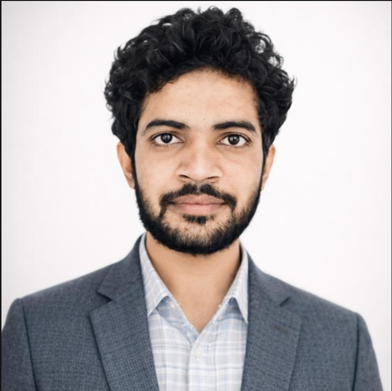

Academic Profile

PhD Scholar in Algebraic Coding Theory and DNA Codes
Mohd Azeem is a Ph.D. scholar in Mathematics at Aligarh Muslim University, specializing in Algebraic Coding Theory, DNA code design, and cyclic structures over finite rings. His research combines rigorous algebraic techniques with computational methods to develop structured, reversible coding frameworks. His work focuses on designing robust coding models over finite rings, particularly DNA-inspired codes, to advance reliable solutions for modern data transmission, storage systems, and biological information processing. His research bridges theoretical mathematics with practical applications in information theory and bioinformatics.
- Name: Mohd Azeem
- Date of Birth: May 05, 1997
- Location: Moradabad, Uttar Pradesh, India
- Status: PhD Candidate (ongoing since 2022)
- Research Experience: 3+ years in Algebraic Coding Theory